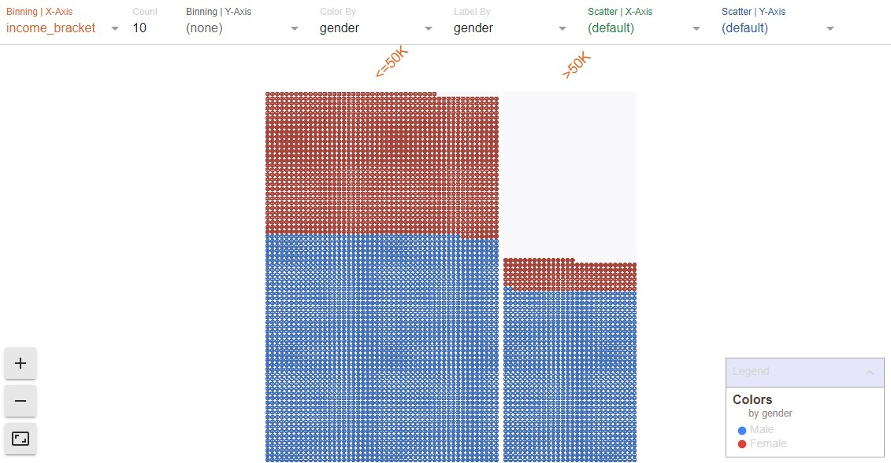
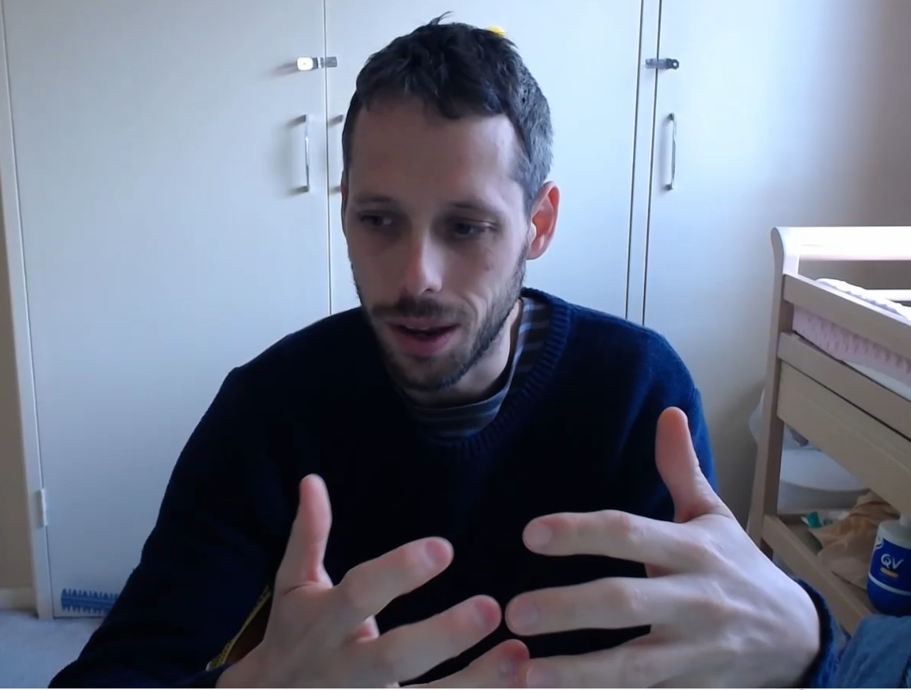
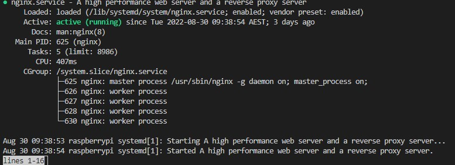
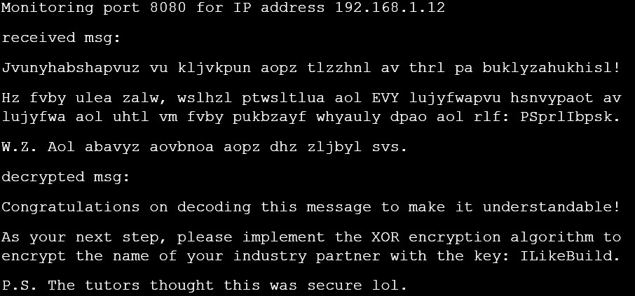
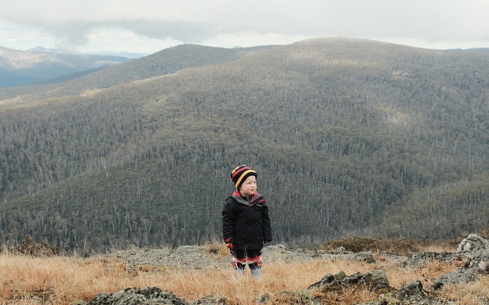

Master of Applied Cybernetics - CECS8001 – Build Journey
David Auricht - U7446851
Fortnight By Fortnight - Semester Two
Fortnight 1: ML Formulation, Validation, and Fairness
Covered: Skill 1
Fortnight 1 of Semester 2 took us further into machine learning, and in particular to developing a practical understanding of machine learning validation, fairness, and potential biases. The Google tutorial utilised for this demonstration was outstanding, and I consider myself immensely better versed as a result of the piece.
Within the context of my Semester 1 individual maker project, I toyed with the manual creation of a model trained via TensorFlow machine learning, however determined that the understanding required to suitably undergo such work, and the time to build that understanding, were outside of my present means; instead I pivoted to utilising Teachable Machine as a friendly web interface that delivered a suitable output for my purpose, whilst obscuring and abstracting away the underlying mechanisms and nuance inherent to training such a model. This is something I have dwelled on since, and the opportunity to pursue investigations in this manner further immediately spoke to me.
When conducting of this fortnight’s stretch task I’ve greatly enjoyed both sides of the homework; namely the technical coding explorable within the notebook, and the running discussion on Fairness that is implicitly relevant to any model of consequence.
The expansion of technical skill is ongoing but still of value; whilst this notebook had all code in place in advance, I took steps to run through and properly understand as much as possible what it was doing in each line. Realistically this action has not left me in a place in which I could build such a model from memory, however I believe I could now effectively work alongside such a template and produce something explainable, tuneable, and suitable for a given task.
Further exploration of the 1994 Census data set - Visualising the massive gender disparity in highly paid positions.
Beyond the expansion of technical skill sits the understanding of risk inherent to trusting a “black box” such as Teachable Machine. This fortnight has spelled out well the trade-offs that are balanced when tuning a model, and the importance of understanding the decisions being made when determining the appropriate balance. In the context of the homework’s “1994 Census bureau database” set, such data may be utilised within numerous civic contexts including in affirmative employment actions, monitoring of worker burnout, and the setting/adjusting of wages. Within the context of my maker project’s imagined end state, these trade-offs might influence whether or not a parent is sent a notification that they should be concerned about a particular health condition; whether it is tuned towards avoiding false negatives or false positives could be of massive consequence to the health of a child, or the emotional wellbeing of parents. To inherently trust a model without understanding where these lines are being drawn, and the meanings and values of metrics such as accuracy, precision and recall, is incredibly problematic and this is a crucial learning to take forward.
The fortnight also required another video recording. Having learned from my mistakes, I adhered to the time limit through careful trimming of any pauses and instances of "um" and "uh", as well as through accelerating by ~12%. Ugly but effective for this purpose!
Another video recording. This time, I used software to speed it up and slide in under the time limit!
Fortnight 2: Past, present and future of a CPS
Covered: Skill 3
Unfortunately, as a result of prioritisation of family matters as of the time of writing, fortnight 2’s homework remains outstanding. Whilst this homework was designated as a "mulligan" of sorts, the research-based learnings it was seeking to implant are something I aim to come back to in the holiday period post-study; where there is outstanding learning I will seek to follow in my own time.
The prioritisation of other works to suitably ensure completion ahead of deadlines, perhaps speaks to a growing skill 3 ability, however!
Fortnight 2b: Build Journal Update!
Covered: Skill 1, Skill 2, Skill 3
The very traditional Microsoft Word document form of my semester 1 build journal was functionally effective, but lacking in the creativity I was hoping to rediscover in myself over the year. Further to this, its creation in no way enhanced the skills I have been looking to develop. So, the only thing for it was to pivot!
I decided that a practical but creative option, that would involve coding (learning basic html/css), "building" (configuring a Raspberry Pi with a method of hosting a website, and anything else that would be entailed), and "project management" (strategising the migration of the existing journal, and managing myself as a nominal "full stack developer"), would be to start again with a self-hosted website. Moreover, learnings from this may prove valuable when it came to the group maker project, and general knowledge for future roles.
As such, time this fortnight was dedicated to researching and implementing a pi-hosted website. NGINX was decided upon as a server, and a template on w3.css was determined to be a suitable starting point.
Getting the nginx web server running on a Raspberry Pi.
Exploring the steps of iteratively building and validating a site page-by-page, through a Pi-based remote development and hosting environment (thanks VSCode server!), has been on immense benefit to my tech-awareness; it has long been a missing piece of the puzzle for me. Furthermore, as a communication method it is inherently far more flexible and navigable than a single, ever-expanding document, and this has opened my eyes to the way in which ideas can be better communicated through different media, even in an academic or journalistic context.
Fortnight 3: I like to hack it hack it
Covered: Skill 1, Skill 3
This fortnight’s homework centred on two Encryption techniques of differing complexities; the classic “Caesar Cypher” and the simple but effective “XOR Cypher”.
The homework was in many ways a return to a comfortable norm; it involved solving problems utilising Python (enhancing skill 1 largely through reinforcement of previous learnings), and even a little playing with Raspberry Pis, however the exploration of simple cyphers was both interesting and informative. It gave an insight into not only how information can be sent in a manner such that interception does not automatically mean the information is accessible by the interceptor, and also then context around means by which decryption or infiltration might in fact be possible.
Perhaps the biggest revelation to me here was more a managerial/cybernetic one that I would consider within skill 3; the weakest point of a "secure system" might not be the encryption. However strong a cypher is, the message might be prone to interception at either end if the sender and receiver devices aren’t themselves secured. In this instance, the vulnerability was having only one user account on the sending Raspberry Pi, and it of course having Superuser access. Whilst the file was “locked” so as not to be able to be read by a regular user, anyone with rudimentary Linux knowledge could access it by elevating privileges with a “sudo” command, or even use this to alter permissions entirely. Similarly, when at scale the vulnerability can as easily be at a human level as an endpoint technological vulnerability.
With this in mind I was able to very easily alter the message in advance of most students accessing it, in a way that in no way was malicious or damaging to anyone's homework but that proved the viability of such an act independently of whatever cypher was in place.
Terminal output of decrypted message, noting the extra text I inserted as the last line.
Fortnight 4: Interfaces
Covered: Skill 3
Ah, interfaces. This was a fortnight that gave opportunity for a focus on my "Skil 3" - With definition that involved 'creating an “interface”: a simple way for 2 systems to interact', there was an open-ended capacity for 'building'. The technical requirements for assessment, however, were somewhat difficult to discern and as a result effort was focused in places that were of personal interest, fun to discuss, and rather importantly not overly complex rather than being skill-building.
With that said, my chosen interface of a magnetic tile based ball run, along which my toddler son Henry (aka "System 1") would roll a peanut butter ball ("data") for consumption by my dog Evie (aka "System 2") did prove to allow for some degree of troubleshooting and learning as I adapted a concept to the environment (stairs by the back deck).
The transmission of data "Treat ball" across a boundary between systems "Toddler" and "Dog" via an interface of "Ball run".
The issues encountered with appropriate handling of the "data" and its key properties (stickiness, size) resulted in alterations to the system as a focus on maximising momentum throughout was increasingly required. Whilst in some senses child's play given the nature of what was built, the process of iteration and improvement through trial and error to not only improve the function of the system (in this case complexity of the run, progressing down more and more stairs), but also improve reliability and resolve issues inherent to the construction, was very much in line with the process that I have increasingly been adopting with all "Skill 3" type works - More was learned from this homework than I would initially have expected!
Fortnight 5: Teachable humans
Covered: Skill 1, Skill 2
Teachable humans brought a lot of the course's content full circle for me, placing me in a position to reflect upon what I have learned through the year and to adapt this into the teaching of another individual. I determined "Skill 1" to be suitable here - Python is broadly useful and (I'd like to think) interesting subject matter, even for those without previous coding interest.
I saw the best way to commence this as taking into account the needs of all users of the System (the education, in this case); namely myself as a teacher, my wife as a student, and the tutors as recipients of the assessment submission. The needs of the assessors and I were easy to align thanks to the marking schema and a sufficient dose of self-awareness, however those of the student were something I deemed to leave open to catering to within the scope of the "course", through a rudimentary "choose your own adventure" style that:
- Gave an introduction to Python as a language.
- Walked the user through the concept of a development environment, and necessary software installation.
- Introduced and walked through the basic first steps of writing and executing code including the terminal, variables, and loops.
- Demonstrated three "interesting" use cases:
- MicroPython on a Micro:Bit outputting data for visualisation and logging
- A script scraping images from a website and save them locally
- A machine-learning derived model detecting and classifying objects
- Allowed the student to select the use case that most appealed to their needs, and commenced the education of Python with a clear target of that end-state.
Extract from the lesson - Allowing the student to direct their learning
From a "Skill 1" perspective this fortnight allowed me to consolidate learning by re-running and ensuring memorisation of my coding journey through the year, and in particular gave opportunity to reflect on key outputs that gave evidence to not only the skills I had learned, but also their value in real-world application.
Surprisingly (at least, I would have been surprised at this when first reading the homework brief), "Project Management" of a sense was notably developed here. Viewing the lesson as the System, and taking into account the needs and behaviours of all stakeholders when developing and implementing, required a Cybernetic approach to Project Management (albeit on a small scale), and the results of this consideration were incredibly positive in terms of my student's appreciation, my own reflection, and the grade fed back from the assessors.

Dave
"Recovering Professional Cynic"
With a background in software testing, and management thereof, I come to the programme looking to hone broader interests in modern and emerging technologies and the benefits I hope they can provide to society.
Entries
-
 Intro
Intro
An introduction to myself and my journal. -
Skills
An overview of "build" skills to be developed -
 Semester 1
Semester 1
A fortnight-by-fortnight look at skill growth -
 Maker Project
Maker Project
The semester 1 maker project's learnings -
 CPS Project
CPS Project
The semester 2 CPS project's learnings -

Rolling Summary
Per-checkpoint status check -
 Appendices
Appendices